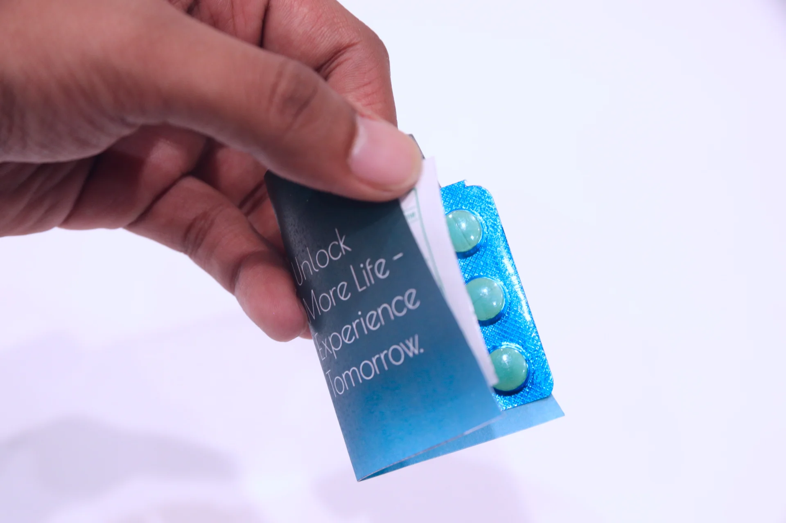

Let the objects occupy the room
Original photography extends into the surrounding space. Keep its color and material intact. Reserve frames for detailed inspection.

Loading the artifacts…
Two boxes offer different ways to think about the years ahead.
A fictional offer, imagined through the original DNA artifacts.
Imagine 50 additional healthy years, no ongoing treatment, and access without financial barriers.
Interactive opening previewOriginal photography leads. Choices follow the objects, and reflections appear after an answer.
Use the live examples below to inspect typography, color, spacing, controls, and states. The opening keeps your preview answer only until you reload or clear it.
Original photography extends into the surrounding space. Keep its color and material intact. Reserve frames for detailed inspection.
Three options sit at the same level. Blue and red come from the two packages. Neither indicates a better answer.
A reflection appears after a choice. Research, private notes, and the final matrix follow the visitor’s attention.
Select a swatch to copy its CSS token.
Color carries an artifact’s identity or a control’s state. Differences in the final matrix use words and marks, so color never carries the comparison alone.
Archivo · locally hosted · variable weight
Would you take
50 more years?
What changed your mind?
Section / 32–60px / 500 / 1.08Imagine more time. Consider what you would want those years to hold, and which conditions matter to you.
Reading / 16–18px / 400 / 1.65Original artifacts · Parth Pawar, 2024
Label / 12px / 400 / 1.5Use smaller gaps within controls and larger gaps between scenes.
16px connects related controls. 24px separates options. 40px separates a component’s parts. 64px opens the composition. 96px separates passages.
Try the same controls used in the opening.
No preview answer selected.
Selected: a filled mark and a stronger top rule. Keyboard focus: a separate blue outline. Disabled: native radio behavior, muted text, and a visible unavailable state.
Use full labels when an answer stands alone. Compact labels such as Extend and Accept belong in the matrix, where their meaning is already established.
A solid action advances the exhibit. A bordered action supports it. A text action opens optional context.
Your reflection
Reflection reveal: 360ms, ease out. Controls respond in 120ms. Reduced motion removes the reveal. Content remains available when animation is unavailable.
Loading and failure belong to the system. An unavailable photograph explains what happened and provides a recovery action.
These controls demonstrate component states.

Six small marks show where you are. The current situation is named. Navigation remains reversible.
This preview mirrors your opening answer.
| Situation | Extend | Accept | Undecided | Compared |
|---|
Five situations remain unanswered in this preview. The full record will compare real choices with the initial answer. Comparisons use written labels and neutral marks.
A note belongs to the decision it follows. Keep it optional, give it a clear limit, and explain how long it stays.
This note stays in page memory only. Reloading clears it.
Use these shared components across the six situations, optional research, and personal record in the next experience pass.
Open the full exhibit